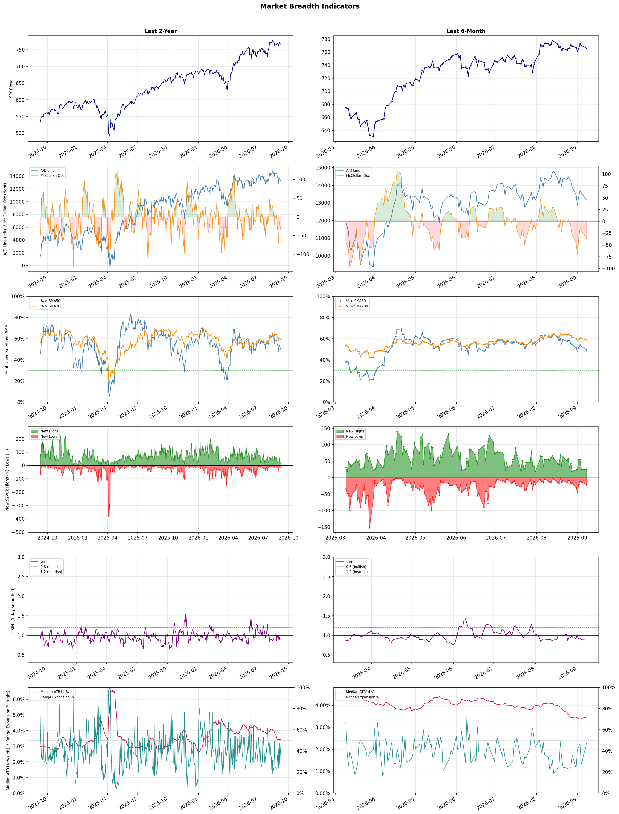

A daily market breadth and sector rotation report for active investors
| Item | Read |
|---|---|
| Regime downgraded | Selective Risk-On → Neutral |
| Regime | Neutral |
| Risk posture | Cautious |
| Universe | 1,325 stocks tracked · 25 new 52-week highs · 30 active swing setups |
| Breadth | only 49.3% of tracked stocks are above SMA50, new highs exceed new lows (25 vs 22), McClellan oscillator (breadth momentum) is negative at -37.1 |
| Leadership | Oil & Gas Refining & Marketing, Copper, and Oil & Gas Integrated |
| Weakest groups | Footwear & Accessories, Solar, and Airlines |
Use this report to prioritize research and chart review; validate entries, stops, liquidity, earnings, and risk before acting.
| Item | Read |
|---|---|
| Primary read | Neutral regime with Cautious risk posture. |
| Research queue | UGP, DINO, MPC, VLO, PSX |
| Leadership focus | Oil & Gas Refining & Marketing, Copper, and Oil & Gas Integrated |
| Caution list | Footwear & Accessories, Solar, and Airlines |
| Review prompt | Check extension risk, chart location, fundamentals, valuation, and earnings before using any research row. |
| Item | Read |
|---|---|
| Primary read | 3 active risk warnings; use screen output as watchlist input only. |
| Bullish screens | UGP, FRO, RIOT, AVTX, DELL |
| Bearish screens | SYK, CPNG |
| Alerts / levels | Automated trigger, stop, ATR, liquidity, reward/risk, and event-risk levels are pending future enrichment. |
| Review prompt | Open the linked chart, define trigger and invalidation, then check liquidity and event risk independently. |
Risk Posture: Cautious — screen backdrop is selective; prioritize research in top-ranked groups
Metric context: McClellan below -50 = elevated selling pressure; below -100 = washout territory. Range Expansion = share of stocks with daily range above their 20-day average. Signal Density = share of tracked names appearing in signal screens.
| Breadth Date | % > SMA50 | % > SMA200 | New Highs | New Lows | McClellan | Median Range | Avg Range | Median ATR14 | Range Expansion | Signal Density |
|---|---|---|---|---|---|---|---|---|---|---|
| 2026-09-08 | 49.3% | 58.6% | 25 | 22 | -37.1 | 3.1% | 3.7% | 3.5% | 47.0% | 7.9% |

Regime downgraded: Selective Risk-On → Neutral
Prior comparison date: September 4, 2026
| Metric | Prior | Current | Change |
|---|---|---|---|
| Regime | Selective Risk-On | Neutral | changed |
| Risk Posture | Selective | Cautious | changed |
| % > SMA50 | 52.5% | 49.3% | -3.2 pts |
| % > SMA200 | 60.3% | 58.6% | -1.6 pts |
| New Highs | 25 | 25 | +0 |
| New Lows | 13 | 22 | -9 |
Top-10 industries entering: Copper. Top-10 industries leaving: Steel. New multi-signal long setups: AVTX, FRO, MRVL, NWL, RIOT, UMC. New multi-signal short setups: CPNG, SYK.
| Status | Tickers | Read |
|---|---|---|
| Added | AMC, APPS, ASST, BAX, BTBT, CLSK, CPNG, FRO | New technical screen matches vs prior report. |
| Removed | ADTN, BNY, DHT, EGO, EWTX, EXPE, FLO, ING | No longer present in today's technical screen matches. |
| Still Active | ANF, AU, AVTX, CRSR, DELL, DXYZ, PATH, RBRK | Appeared in both current and prior reports. |
| Promoted | AVTX, RIOT | Model Screen Score improved by at least 15 points. |
| Downgraded | none | Model Screen Score declined by at least 15 points. |
| Direction | Industry | ETF | Prior Rank | Current Rank | Days | Rank Change |
|---|---|---|---|---|---|---|
| Rose | Gold | GDX | 81 | 4 | 42 | +77 |
| Rose | Agricultural Inputs | N/A | 79 | 7 | 28 | +72 |
| Rose | Uranium | URA | 88 | 20 | 42 | +68 |
| Rose | Capital Markets | KCE | 76 | 10 | 28 | +66 |
| Rose | Copper | COPX | 67 | 2 | 42 | +65 |
Bull: Gold is experiencing rising relative strength primarily due to increasing investor interest in gold mining stocks as a hedge against economic uncertainty and inflation, as highlighted by headlines discussing strategies for trading gold stocks without chasing prices. Additionally, the ongoing pressures in the industry, as noted in articles about gold mining stocks to watch, suggest that while some companies may face challenges, the overall sector remains resilient, reinforcing the attractiveness of gold as a safe-haven asset. Furthermore, insights from experts like VanEck’s Casanova indicate that recent pullbacks in gold prices are viewed as temporary noise, further solidifying gold mining stocks as a standout trade in the current market environment.
Bear: While the rising relative strength of gold may attract investor interest, it's critical to recognize that this trend could be driven more by speculative trading than fundamental value, especially in light of recent headlines highlighting ongoing industry pressures and losses among certain gold stocks. Additionally, as inflation concerns persist, central banks may shift their monetary policies, potentially diminishing gold's appeal as a hedge and leading to increased volatility in mining stocks. The reliance on expert opinions, such as those from VanEck’s Casanova, may overlook the inherent risks and cyclical nature of the gold market, making it essential to approach investments in this sector with caution.
Verdict: The recent rise in gold's relative strength can be fundamentally attributed to heightened investor interest in gold mining stocks as a hedge against economic uncertainty and inflation, despite ongoing industry pressures. However, the key risk lies in the potential for speculative trading to overshadow fundamental value, especially if central banks alter their monetary policies in response to persistent inflation concerns, which could lead to increased volatility in the sector. Investors should approach gold mining stocks with caution, balancing the allure of safe-haven assets against the cyclical nature of the market and potential policy shifts.
Sources: Yahoo Finance, Google News
Bull: The Agricultural Inputs sector is experiencing rising relative strength primarily due to increasing demand for agricultural products, driven by a combination of favorable market conditions and heightened investor interest in undervalued stocks within the basic materials sector, as highlighted by Morningstar. Additionally, positive momentum in key companies like Corteva, which recently surged in stock price, reflects growing confidence in the agricultural sector's resilience and potential for growth, as indicated by multiple sources recognizing the sector's promising outlook through 2026.
Bear: While the Agricultural Inputs sector may currently exhibit rising relative strength and investor interest, this momentum could be misleading due to underlying vulnerabilities such as fluctuating commodity prices, potential supply chain disruptions, and the ongoing impacts of climate change on agricultural productivity. Furthermore, the recent surge in stocks like Corteva may be driven more by short-term speculation rather than sustainable growth fundamentals, suggesting that the sector's resilience could be overstated and may not withstand potential economic headwinds or shifts in consumer demand.
Verdict: The Agricultural Inputs sector is likely experiencing rising relative strength due to robust demand for agricultural products, spurred by favorable market conditions and increased investor interest in undervalued stocks, particularly in companies like Corteva. However, key risks remain, including fluctuating commodity prices, potential supply chain disruptions, and the adverse effects of climate change, which could undermine the sector's growth and resilience in the face of economic challenges. Investors should remain cautious and consider these vulnerabilities when evaluating potential investments in the sector.
Sources: Google News
Bull: The recent rise in the relative strength of uranium stocks can be attributed to a growing risk appetite among investors, as evidenced by the rebounds in stocks like NuScale Power and Oklo amid a broader recovery in the market. Additionally, the significant 57% rally in uranium stocks over the past year, despite a recent correction, indicates strong underlying demand and investor confidence in the sector, particularly as nuclear energy is increasingly viewed as a viable solution for clean energy amidst global shifts toward sustainability. The positive momentum in uranium-related stocks, highlighted by headlines of significant price movements, suggests that the market is beginning to recognize the long-term potential of nuclear energy in the energy transition narrative.
Bear: While the recent uptick in uranium stocks may appear promising, it is crucial to recognize that the 57% rally over the past year has led to inflated valuations, causing a significant 17% correction as investors reassess the sustainability of these prices. Moreover, the volatility observed in stocks like NuScale Power and Oklo, coupled with setbacks such as project cancellations, highlights the inherent risks and uncertainties in the nuclear sector, which could undermine investor confidence and lead to further declines as market enthusiasm wanes.
Verdict: The recent rise in uranium stocks is primarily driven by increasing investor confidence in nuclear energy as a sustainable solution to global energy challenges, reflected in a 57% rally over the past year. However, the key risk lies in the potential for inflated valuations and market volatility, as evidenced by a 17% correction and ongoing project uncertainties, which could dampen investor sentiment and lead to further price declines. Investors should closely monitor project developments and market sentiment to navigate these risks effectively.
Sources: Yahoo Finance, Google News
Bull: The Capital Markets sector is likely experiencing rising relative strength due to a combination of increased investor confidence and favorable macroeconomic conditions, as indicated by the bullish outlooks from J.P. Morgan and Morningstar on stock sectors primed for growth. Additionally, the influx of liquidity from China's $54 billion stimulus into banks and insurers, despite initial stock declines, suggests potential for future capital market expansion, further supporting the positive momentum in this sector.
Bear: While the bull analyst points to rising investor confidence and favorable macroeconomic conditions, it's important to consider that the Capital Markets sector is often highly sensitive to interest rate fluctuations and economic uncertainties. The recent stimulus from China may not translate into immediate gains for U.S. capital markets, especially if global economic conditions remain volatile, as evidenced by the decline in bank and insurer stocks despite the liquidity injection. Additionally, the mixed signals from recent market performance, such as the bearish outlook from Nasdaq, suggest that underlying risks could outweigh the current relative strength, making investments in KCE potentially precarious.
Verdict: The Capital Markets sector is experiencing rising relative strength primarily due to increased investor confidence fueled by favorable macroeconomic conditions and significant liquidity injections, such as China's $54 billion stimulus. However, investors should remain cautious of the key risk posed by interest rate fluctuations and potential global economic volatility, which could undermine this positive momentum and lead to further declines in bank and insurer stocks. It is advisable to closely monitor economic indicators and interest rate trends before making investment decisions in this sector.
Sources: Yahoo Finance, Google News
Bull: Copper is experiencing a rising relative strength due to its critical role in the electrification and AI boom, as highlighted by the headlines discussing COPX as a key investment in the "pick-and-shovel" trade for AI. Additionally, the significant price appreciation of Freeport-McMoRan, which has surged 44% in 2026, indicates strong demand and bullish sentiment in the copper sector, further supported by discussions around the best copper stocks to capitalize on this trend. The overall focus on copper's essential role in green technologies and infrastructure development is driving investor interest and positioning the sector for robust growth.
Bear: While the recent price appreciation of Freeport-McMoRan and the rising relative strength of copper may suggest bullish sentiment, this could be misleading as it may be driven more by speculative trading rather than sustainable demand fundamentals. The copper market is facing significant headwinds, including potential oversupply as new mining projects come online and the risk of economic slowdown, particularly in key consumer markets like China. Furthermore, the narrative linking copper to the AI and electrification boom may be overly optimistic, as the actual demand growth could be tempered by technological advancements that reduce copper usage or by alternative materials gaining traction in these industries.
Verdict: The copper industry's rising trend is fundamentally driven by its critical role in electrification and green technologies, spurred by strong demand from sectors like AI and infrastructure development. However, investors should remain cautious of potential oversupply from new mining projects and the risk of an economic slowdown in major markets, particularly China, which could dampen demand and undermine the current bullish sentiment. It is advisable to monitor supply dynamics and macroeconomic indicators closely before making investment decisions in this sector.
Sources: Yahoo Finance, Google News
| Direction | Industry | ETF | Prior Rank | Current Rank | Days | Rank Change |
|---|---|---|---|---|---|---|
| Fell | Airlines | N/A | 13 | 85 | 35 | -72 |
| Fell | Travel Services | N/A | 6 | 76 | 35 | -70 |
| Fell | Apparel Manufacturing | N/A | 17 | 82 | 42 | -65 |
| Fell | Leisure | N/A | 16 | 79 | 42 | -63 |
| Fell | Packaging & Containers | N/A | 9 | 67 | 42 | -58 |
Bear: While the bull analyst points to macroeconomic pressures and potential optimism for growth, the reality is that the airline industry is facing significant headwinds that could undermine this outlook. Rising fuel costs, labor shortages, and ongoing geopolitical tensions are likely to create persistent operational challenges, leading to increased costs and reduced profitability. Furthermore, the relative strength trend is falling, indicating that investor confidence is waning, and the "best stocks to buy" rhetoric may simply reflect a search for safe havens in a sector that remains fundamentally unstable.
Bull: The Airlines industry is experiencing a relative strength decline primarily due to macroeconomic pressures such as fluctuating currency values, as indicated by the headline regarding the strengthening won impacting airline stocks. Additionally, the focus on "best airline stocks to buy" suggests that while there is optimism for future growth, current market sentiment may be cautious, leading to volatility as investors weigh short-term challenges against long-term potential. This juxtaposition of optimism and caution is reflected in the varied coverage from sources like The Motley Fool and Zacks Investment Research, highlighting a complex outlook for the sector.
Verdict: The airline industry's decline is primarily driven by macroeconomic pressures, including fluctuating currency values and rising operational costs from fuel and labor shortages, which undermine profitability. The key risk highlighted by the bear case is the potential for ongoing geopolitical tensions to exacerbate these challenges, leading to further declines in investor confidence and operational stability. Investors should remain cautious and consider reallocating to more stable sectors until clearer signs of recovery emerge.
Sources: Google News
Bear: While the bull thesis points to potential recovery in the Travel Services sector, it underestimates the persistent macroeconomic challenges that could hinder a rebound, such as ongoing inflation and rising interest rates, which are likely to continue squeezing consumer discretionary spending. Additionally, the recent sector-wide selling, exemplified by Expedia's 5.5% drop, signals deeper issues within the industry, including possible shifts in consumer behavior towards more cost-conscious travel options, which could further suppress growth and profitability in the near term.
Bull: The Travel Services sector is experiencing a decline in relative strength primarily due to broader market pressures, as highlighted by the recent 5.5% drop in Expedia Group amid sector-wide selling. This downturn may be influenced by macroeconomic factors such as rising interest rates and inflation concerns, which can dampen consumer spending on discretionary travel. However, the positive outlook from sources like Morningstar and The Motley Fool, which emphasize investment opportunities and undervalued stocks for 2026, suggests that the sector may rebound as these economic pressures stabilize and consumer confidence returns.
Verdict: The Travel Services sector is currently declining due to macroeconomic pressures, particularly rising interest rates and persistent inflation, which are constraining consumer discretionary spending on travel. The key risk highlighted by the bear thesis is the potential for a sustained shift in consumer behavior towards more cost-conscious travel options, which could further impede growth and profitability in the near term. Investors should remain cautious and monitor economic indicators closely, as any signs of stabilization in the economy may present a more favorable entry point for long-term investments in undervalued stocks within the sector.
Sources: Google News
Bear: While the bull analyst points to favorable headlines and select companies poised for growth, the overall decline in relative strength for the Apparel Manufacturing industry signals deeper, systemic issues that cannot be overlooked. The persistent economic pressures, including inflation and shifting consumer preferences towards sustainability and value, are likely to hinder broad recovery, as many brands struggle to adapt to these changes. Furthermore, increased competition from both established and emerging players may lead to market saturation, making it difficult for even the "best" stocks to sustain long-term growth in a challenging landscape.
Bull: The Apparel Manufacturing industry is currently experiencing a decline in relative strength primarily due to shifting consumer preferences and economic pressures, as highlighted by recent headlines focusing on the "best apparel stocks" and favorable trends for select companies. Factors such as increased competition, changing fashion trends, and the impact of inflation on consumer spending may have contributed to this relative weakness. However, the positive outlook from sources like Yahoo Finance and Forbes indicates that certain companies within the sector are well-positioned to capitalize on these trends, suggesting that the overall industry may soon enter a growth phase.
Verdict: The Apparel Manufacturing industry's decline is fundamentally driven by shifting consumer preferences towards sustainability and value, coupled with persistent economic pressures like inflation that are impacting discretionary spending. While select companies may be positioned for growth, the key risk lies in the industry's systemic challenges, including increased competition and market saturation, which could undermine long-term recovery and profitability across the sector. Investors should remain cautious and focus on companies demonstrating adaptability and resilience in this evolving landscape.
Sources: Google News
Bear: While the bull analyst highlights macroeconomic pressures and mixed earnings as key factors, it's crucial to recognize that the broader decline in relative strength for the leisure industry signals more fundamental issues, such as changing consumer behavior and increased competition from alternative leisure options, including digital entertainment and AI-driven experiences. Furthermore, the headlines suggest a focus on stock picks amidst industry challenges, indicating that many companies may be struggling to adapt to the evolving landscape, which could lead to further erosion of margins and market share for traditional leisure players. Thus, the outlook remains bearish as the industry grapples with both external pressures and internal disruptions.
Bull: The Leisure industry is experiencing a decline in relative strength primarily due to macroeconomic pressures, including rising interest rates and inflation, which are impacting discretionary spending. This is evident from the headlines discussing challenges faced by leisure and recreation stocks, as well as the mixed earnings reports in the sector, indicating that while some companies like Acushnet are performing well, overall consumer sentiment remains cautious. Additionally, the mention of AI disruption suggests that technological advancements may be reshaping consumer preferences and competitive dynamics, further complicating the landscape for traditional leisure companies.
Verdict: The leisure industry's decline is primarily driven by macroeconomic pressures, such as rising interest rates and inflation, which are constraining discretionary spending and shifting consumer behavior towards more affordable or alternative leisure options, including digital entertainment. The key risk highlighted by the bear case is that traditional leisure companies may struggle to adapt to these changing preferences and increased competition, potentially leading to further margin erosion and loss of market share. Investors should closely monitor companies' adaptability and innovation strategies to gauge their resilience in this evolving landscape.
Sources: Google News
Bear: While the bull analyst points to dividends and earnings as a buffer for certain companies, the broader trend of falling relative strength in the Packaging & Containers industry signals deeper, systemic issues that are unlikely to be resolved in the near term. The ongoing geopolitical tensions, particularly the impact of the Iran war, not only disrupt supply chains but also create an uncertain market environment that can lead to reduced consumer demand and increased costs, ultimately undermining the profitability of even the more resilient players in the sector. Furthermore, the mixed sentiments from financial news outlets reflect a lack of confidence in the industry's ability to navigate these challenges, suggesting that any short-term gains may be unsustainable.
Bull: The Packaging & Containers industry is experiencing a decline in relative strength largely due to macroeconomic pressures, including heightened geopolitical tensions, as highlighted by the impact of the Iran war on packaging stocks noted by Morningstar. Additionally, while some companies like Packaging Corp are maintaining gains through dividends and earnings, the overall sector is grappling with challenges that have led to increased volatility and investor caution, as seen in the mixed sentiments expressed by various financial news outlets.
Verdict: The Packaging & Containers industry is experiencing a decline primarily due to macroeconomic pressures and geopolitical tensions, particularly the Iran war, which disrupt supply chains and create uncertainty in consumer demand. While some companies may maintain short-term gains through dividends and earnings, the bear case highlights a significant risk of reduced profitability across the sector as these systemic issues persist, suggesting that investors should approach the industry with caution and consider reallocating to more stable sectors.
Sources: Google News
| Industry | Rank | ETF | 7d | 14d | 28d | 42d | Chg 42d | Size | 20D | 60D | Composite | Active Setups |
|---|---|---|---|---|---|---|---|---|---|---|---|---|
| Oil & Gas Refining & Marketing | 1 | CRAK | 1 | 4 | 6 | 1 | 0 | 7 | 21.3% | 51.7% | 0.988 | 0 |
| Copper | 2 | COPX | 13 | 2 | 7 | 67 | +65 | 6 | 4.0% | 18.3% | 0.924 | 0 |
| Oil & Gas Integrated | 3 | XLE | 4 | 12 | 22 | 25 | +22 | 10 | 7.6% | 11.1% | 0.895 | 0 |
| Gold | 4 | GDX | 10 | 5 | 26 | 81 | +77 | 25 | 8.0% | 25.6% | 0.886 | 1 |
| Oil & Gas E&P | 5 | XOP | 5 | 8 | 19 | 51 | +46 | 26 | 7.6% | 12.2% | 0.874 | 2 |
| Health Information Services | 6 | N/A | 3 | 3 | 4 | 12 | +6 | 12 | 7.3% | 39.5% | 0.865 | 0 |
| Agricultural Inputs | 7 | N/A | 7 | 29 | 79 | 46 | +39 | 5 | 16.2% | 21.2% | 0.865 | 0 |
| Diagnostics & Research | 8 | N/A | 2 | 1 | 1 | 14 | +6 | 16 | 3.7% | 33.2% | 0.862 | 0 |
| Oil & Gas Midstream | 9 | AMLP | 11 | 17 | 47 | 31 | +22 | 22 | 6.9% | 12.3% | 0.855 | 0 |
| Capital Markets | 10 | KCE | 30 | 20 | 76 | 57 | +47 | 31 | 16.9% | 7.8% | 0.836 | 1 |
Rank columns (7d–42d) show the industry's rank that many trading days ago — lower is stronger. Chg 42d = rank change vs 42 trading days ago — positive means the industry moved up. 20D and 60D are the mean stock return within the industry over that period. Active Setups: count of today's swing-trade candidates from this industry appearing across all signal screens.
| Industry | Rank | ETF | 7d | 14d | 28d | 42d | Chg 42d | Size | 20D | 60D | Composite | Active Setups |
|---|---|---|---|---|---|---|---|---|---|---|---|---|
| Footwear & Accessories | 87 | N/A | 87 | 88 | 84 | 34 | -53 | 5 | -17.7% | -22.6% | 0.021 | 0 |
| Solar | 86 | TAN | 88 | 87 | 87 | 84 | -2 | 8 | -7.8% | -27.2% | 0.067 | 0 |
| Airlines | 85 | N/A | 84 | 85 | 28 | 48 | -37 | 8 | -13.7% | -8.4% | 0.129 | 0 |
| Chemicals | 84 | N/A | 85 | 86 | 88 | 80 | -4 | 8 | -5.6% | -24.8% | 0.130 | 0 |
| Resorts & Casinos | 83 | N/A | 80 | 83 | 48 | 47 | -36 | 6 | -6.1% | -11.3% | 0.135 | 0 |
| Apparel Manufacturing | 82 | N/A | 68 | 80 | 41 | 17 | -65 | 6 | -13.0% | -10.5% | 0.136 | 0 |
| Building Products & Equipment | 81 | XHB | 79 | 76 | 51 | 62 | -19 | 8 | -7.3% | -6.1% | 0.143 | 0 |
| Aerospace & Defense | 80 | ITA | 78 | 65 | 36 | 82 | +2 | 26 | -14.2% | -20.7% | 0.149 | 1 |
| Leisure | 79 | N/A | 71 | 78 | 55 | 16 | -63 | 9 | -7.5% | -7.6% | 0.208 | 0 |
| Auto Manufacturers | 78 | N/A | 75 | 82 | 68 | 52 | -26 | 10 | -6.0% | -8.0% | 0.210 | 0 |
Rank columns (7d–42d) show the industry's rank that many trading days ago — lower is stronger. Chg 42d = rank change vs 42 trading days ago — positive means the industry moved up. 20D and 60D are the mean stock return within the industry over that period. Active Setups: count of today's swing-trade candidates from this industry appearing across all signal screens.
These are research candidates from top-ranked stocks, capped at five names per industry to avoid over-concentration. Returns shown (60D, 120D, 250D) are historical — they reflect where prices have already moved, not forward expectations. Extension Risk flags names that may require extra patience or a better entry point. They are not buy signals.
Chart: TV = TradingView chart (opens in browser); PDF = local chart file (if downloaded).
| Ticker | Name | Industry | Industry Rank | Market Cap | 60D Hist | 120D Hist | 250D Hist | Extension Risk | Research Reason | Chart |
|---|---|---|---|---|---|---|---|---|---|---|
| UGP | Ultrapar Participacoes | Oil & Gas Refining & Marketing | 1 | N/A | 56.6% | 51.9% | 105.7% | Extended | Top-ranked in industry; extended | TV |
| DINO | HF Sinclair | Oil & Gas Refining & Marketing | 1 | N/A | 55.9% | 87.8% | 113.3% | Extended | Top-ranked in industry; extended | TV |
| MPC | Marathon Petroleum | Oil & Gas Refining & Marketing | 1 | N/A | 52.9% | 71.6% | 120.8% | Extended | Top-ranked in industry; extended | TV |
| VLO | Valero Energy | Oil & Gas Refining & Marketing | 1 | N/A | 50.4% | 63.7% | 141.6% | Extended | Top-ranked in industry; extended | TV |
| PSX | Phillips 66 | Oil & Gas Refining & Marketing | 1 | N/A | 46.3% | 51.9% | 101.7% | Constructive | Top-ranked in industry | TV |
| ERO | Ero Copper | Copper | 2 | N/A | 36.9% | 41.6% | 140.7% | Constructive | Top-ranked in industry | TV |
| TGB | Taseko Mines | Copper | 2 | N/A | 29.9% | 33.0% | 163.3% | Constructive | Top-ranked in industry | TV |
| SCCO | Southern Copper | Copper | 2 | N/A | 16.5% | 21.7% | 121.6% | Constructive | Top-ranked in industry | TV |
| FCX | Freeport-McMoRan | Copper | 2 | N/A | 15.8% | 32.5% | 76.4% | Constructive | Top-ranked in industry | TV |
| HBM | Hudbay Minerals | Copper | 2 | N/A | 8.9% | 36.8% | 123.0% | Constructive | Top-ranked in industry | TV |
| PBR | Petroleo Brasileiro SA Petrobras | Oil & Gas Integrated | 3 | N/A | 17.5% | 11.4% | 76.3% | Constructive | Top-ranked in industry | TV |
| CVE | Cenovus Energy | Oil & Gas Integrated | 3 | N/A | 17.2% | 41.7% | 106.2% | Constructive | Top-ranked in industry | TV |
| CVX | Chevron | Oil & Gas Integrated | 3 | N/A | 13.9% | 7.9% | 40.8% | Constructive | Top-ranked in industry | TV |
| SHEL | Shell | Oil & Gas Integrated | 3 | N/A | 12.0% | 5.5% | 37.5% | Constructive | Top-ranked in industry | TV |
| SU | Suncor Energy | Oil & Gas Integrated | 3 | N/A | 10.6% | 12.2% | 69.2% | Constructive | Top-ranked in industry | TV |
| SSRM | SSR Mining | Gold | 4 | N/A | 40.5% | 30.8% | 74.7% | Constructive | Top-ranked in industry | TV |
| WPM | Wheaton Precious Metals | Gold | 4 | N/A | 37.9% | 13.6% | 48.9% | Constructive | Top-ranked in industry | TV |
| ARIS | Aris Mining | Gold | 4 | N/A | 32.3% | 7.2% | 113.0% | Constructive | Top-ranked in industry | TV |
| GFI | Gold Fields | Gold | 4 | N/A | 31.4% | 1.7% | 35.9% | Constructive | Top-ranked in industry | TV |
| CDE | Coeur Mining | Gold | 4 | N/A | 26.0% | -1.7% | 44.3% | Constructive | Top-ranked in industry | TV |
These are technical screen matches from existing signal files. They are not trade recommendations. Trigger, stop, ATR, liquidity, reward/risk, and event risk still require separate validation until those inputs are available.
Model Screen Score is weighted by signal count, industry rank, freshness, and setup type. It is not a probability of profit, expected return, or suitability rating. Industry cap: max 3 candidates per industry.
Signal glossary: Momentum Pullback = stock in an uptrend that has pulled back 10–30% and shows re-entry conditions. MA Compression = short- and long-term moving averages converging, often preceding a directional move. Three-Day Up/Down = three consecutive closes in the same direction. New 52Wk High/Low = price reached a new annual extreme.
Chart: TV = TradingView chart (opens in browser); PDF = local chart file (if downloaded).
| Ticker | Industry | Setups | Close | Industry Rank | Signal Count | Model Screen Score | Reason | Chart |
|---|---|---|---|---|---|---|---|---|
| UGP | Oil & Gas Refining & Marketing | New 52Wk High; Three-Day Up | 7.45 | 1 | 2 | 100 | Multi-signal; top industry breakout | TV |
| FRO | Oil & Gas Midstream | New 52Wk High; Three-Day Up | 46.62 | 9 | 2 | 85 | Multi-signal; top industry breakout | TV |
| RIOT | Capital Markets | Momentum Pullback; Three-Day Up | 22.26 | 10 | 2 | 85 | Multi-signal; top industry pullback | TV |
| AVTX | Biotechnology | Momentum Pullback; Three-Day Up | 19.71 | 11 | 2 | 85 | Multi-signal; pullback setup | TV |
| DELL | Computer Hardware | New 52Wk High; Three-Day Up | 533.88 | 16 | 2 | 77 | Multi-signal; new-high strength | TV |
| NWL | Household & Personal Products | New 52Wk High; Three-Day Up | 6.34 | 25 | 2 | 77 | Multi-signal; new-high strength | TV |
| VOD | Telecom Services | New 52Wk High; Three-Day Up | 17.31 | 27 | 2 | 70 | Multi-signal; new-high strength | TV |
| ANF | Apparel Retail | New 52Wk High; Three-Day Up | 151.43 | 41 | 2 | 65 | Multi-signal; new-high strength | TV |
| MRVL | Semiconductors | Momentum Pullback; Three-Day Up | 225.41 | 65 | 2 | 55 | Multi-signal; pullback setup | TV |
| UMC | Semiconductors | Momentum Pullback; Three-Day Up | 21.82 | 65 | 2 | 55 | Multi-signal; pullback setup | TV |
| AU | Gold | Momentum Pullback | 107.83 | 4 | 1 | 58 | Single-signal; top industry pullback | TV |
| WTI | Oil & Gas E&P | Momentum Pullback | 3.96 | 5 | 1 | 58 | Single-signal; top industry pullback | TV |
| MUR | Oil & Gas E&P | MA Compression | 37.58 | 5 | 1 | 53 | Single-signal; top industry setup | TV |
| IBRX | Biotechnology | Momentum Pullback | 8.29 | 11 | 1 | 50 | Single-signal; pullback setup | TV |
| MRNA | Biotechnology | Momentum Pullback | 140.33 | 11 | 1 | 50 | Single-signal; pullback setup | TV |
| DXYZ | Asset Management | Momentum Pullback | 34.24 | 14 | 1 | 50 | Single-signal; pullback setup | TV |
| HNGE | Health Information Services | Three-Day Up | 92.69 | 6 | 1 | 48 | Single-signal; top industry setup | TV |
| CRSR | Computer Hardware | Momentum Pullback | 12.26 | 16 | 1 | 42 | Single-signal; pullback setup | TV |
| UMAC | Computer Hardware | Momentum Pullback | 25.98 | 16 | 1 | 42 | Single-signal; pullback setup | TV |
| APPS | Software - Application | Momentum Pullback | 11.30 | 19 | 1 | 42 | Single-signal; pullback setup | TV |
| FRSH | Software - Application | Momentum Pullback | 12.10 | 19 | 1 | 42 | Single-signal; pullback setup | TV |
| AMC | Entertainment | Momentum Pullback | 2.56 | 22 | 1 | 42 | Single-signal; pullback setup | TV |
| PATH | Software - Infrastructure | Momentum Pullback | 14.01 | 23 | 1 | 42 | Single-signal; pullback setup | TV |
| RBRK | Software - Infrastructure | Momentum Pullback | 91.63 | 23 | 1 | 42 | Single-signal; pullback setup | TV |
| BTBT | Capital Markets | Three-Day Up | 1.70 | 10 | 1 | 40 | Single-signal; top industry setup | TV |
| CLSK | Capital Markets | Three-Day Up | 13.48 | 10 | 1 | 40 | Single-signal; top industry setup | TV |
| ASST | Asset Management | Three-Day Up | 27.16 | 14 | 1 | 40 | Single-signal; upside pattern | TV |
| BAX | Medical Instruments & Supplies | Momentum Pullback | 24.86 | 34 | 1 | 35 | Single-signal; pullback setup | TV |
Bearish setups — stocks making new lows or showing persistent downside patterns. Validate carefully before acting.
| Ticker | Industry | Setups | Close | Industry Rank | Signal Count | Model Screen Score | Reason | Chart |
|---|---|---|---|---|---|---|---|---|
| SYK | Medical Devices | New 52Wk Low; Three-Day Down | 276.43 | 46 | 2 | 35 | Multi-signal; new-low weakness | TV |
| CPNG | Internet Retail | New 52Wk Low; Three-Day Down | 14.81 | 70 | 2 | 25 | Multi-signal; new-low weakness | TV |
How To Use This Report
| Use | Purpose |
|---|---|
| Market map | Start with breadth, regime, risk warnings, and what changed since the prior report. |
| Industry scan | Use leading, deteriorating, rising, and declining industries to focus research. |
| Research queue | Treat long-term candidates as names for deeper fundamental, valuation, and chart review. |
| Technical review | Treat bullish and bearish screen matches as watchlist inputs that require independent trigger, stop, liquidity, and event-risk checks. |
| Source follow-up | Use chart links and source files to verify raw inputs before relying on any row. |
What This Report Is Not
| Not | Meaning |
|---|---|
| Investment advice | The report does not evaluate personal objectives, risk tolerance, tax situation, account type, or suitability. |
| Buy/sell recommendation | Named tickers are research candidates or screen matches, not recommendations to transact. |
| Price target | The report does not provide fair value estimates, targets, or expected returns. |
| Trade plan | Trigger, stop, sizing, reward/risk, liquidity, and event-risk review remain separate user work. |
| Performance claim | Model Screen Score is not validated historical performance or a forecast of future results. |
| Item | Note |
|---|---|
| Version | Daily Report Methodology v1 |
| Model Screen Score | Screen-fit rank based on signal count, industry rank, freshness, and setup type. |
| Not predictive proof | The score is not expected return, probability of profit, historical validation, or suitability analysis. |
| Industry ranks | Composite industry ranks use existing daily ranking outputs and historical rank columns when available. |
| Research candidates | Long-term rows are research candidates from ranked stocks and leading industries, with historical returns labeled as historical only. |
| Technical matches | Bullish and bearish rows are screen matches requiring independent chart, trigger, stop, liquidity, and event-risk review. |
| Source | Status | Rows | Path |
|---|---|---|---|
| Market breadth | present | 1253 | breadth_20260908.csv |
| Industry composite rankings | present | 87 | all_industry_composite_20260908.csv |
| Top ranked stocks | present | 160 | top_ranked_composite_20260908.csv |
| All ranked stocks | present | 1325 | all_stocks_composite_sorted_20260908.csv |
| Top momentum pullbacks | present | 1476 | top_momentum_pullbacks_20260908.csv |
| MA compression | present | 1476 | ma_compression_stocks_20260908.csv |
| Three-day up/down | present | 137 | three_day_up_down_stocks_20260908.csv |
| New 52-week members | present | 47 | breadth_new_52wk_members_20260908.csv |
This report is generated from automated technical screens and is for informational and research purposes only. It is not investment advice, a solicitation, or a recommendation to buy or sell any security. Past performance is not indicative of future results. You are solely responsible for your own investment decisions. Consult a licensed financial advisor before acting on any information herein.